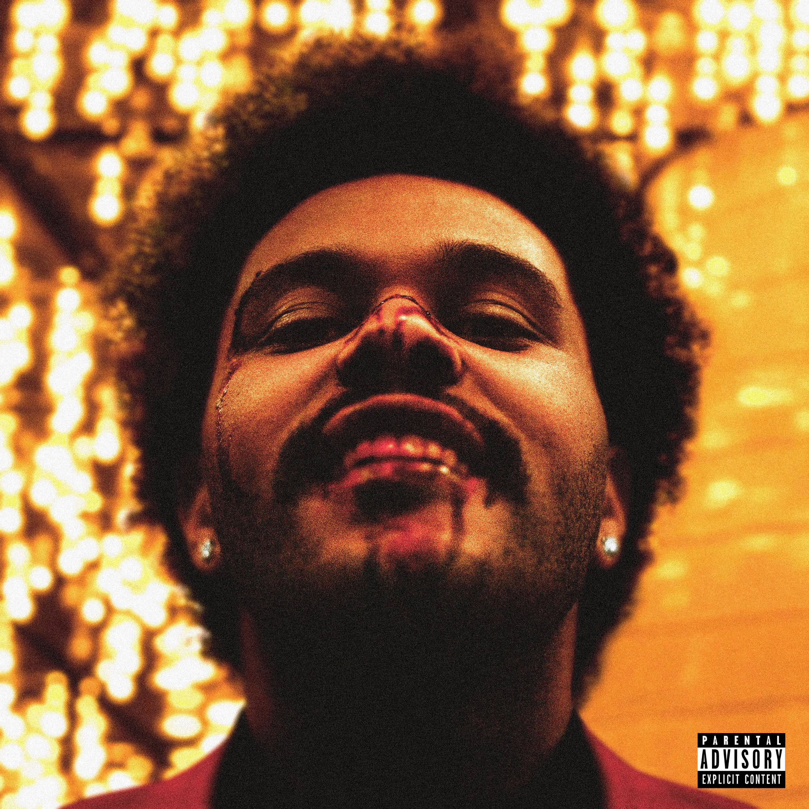

<!doctype html>
<html lang="en">
  <head>
    <!-- Required meta tags -->
    <meta charset="utf-8">
    <meta name="viewport" content="width=device-width, initial-scale=1, shrink-to-fit=no">

    <!-- Bootstrap CSS -->
    <link rel="stylesheet" href="https://stackpath.bootstrapcdn.com/bootstrap/4.4.1/css/bootstrap.min.css" integrity="sha384-Vkoo8x4CGsO3+Hhxv8T/Q5PaXtkKtu6ug5TOeNV6gBiFeWPGFN9MuhOf23Q9Ifjh" crossorigin="anonymous">
</html>

<div class="row py-5 px-0">
    <div class="col-xl-4 col-md-6 col-sm-10 mx-auto">

        <!-- Profile widget -->
        <div class="bg-white shadow rounded overflow-hidden">
            <div class="px-4 pt-4 pb-4 bg-dark">
                <div class="media align-items-end profile-header">
                    <div class="profile mr-3"><a href="https://www.instagram.com/cappleprod/" class="btn btn-dark btn-sm btn-block">Instagram</a><a href="html/subpage.html" class="btn btn-dark btn-sm btn-block">Subpage</a></div>
                    <div class="media-body mb-3 text-white">
                        <h4 class="mt-0 mb-0 text-align: center">Marek Kučera</h4>
                        <p class="small mb-4"> <i class="fa fa-map-marker mr-2"></i>Spišská Teplica</p>
                        <p class="small mb-0"> <i class="fa fa-map-marker mr-2"></i>Študent na súkromnej strednej odbornej škole inteligentných technológií</p>
                        <p class="small mb-0"> <i class="fa fa-map-marker mr-2"></i>Záľuby: Grafický dizajn, fotografia, kreslenie, hranie hier</p>
                    </div>
                </div>
            </div>
            <div class="bg-white shadow overflow-hidden">
                <div class="px-4 pt-4 pb-4 bg-white">
                    <div class="media align-items-end profile-header">
                        <div class="media-body mb-3 ">
                            <h4 class="mt-0 mb-0 text-align:center">Odborné skúsenosti</h4>
                            <p class="small mb-0> <i class="fa fa-map-marker mr-2"></i>Expert v programoch na grafický dizajn (Adobe Photoshop, Adobe Illustrator, Clip studio Paint). Pokročilé skúsenosti v programovacom jazyku Python, C a HTML. Najobľúbenejší predmet sú počítačové siete </p>
                        </div>
                    </div>
                </div>

            <div class="py-1 px-4">
                <div class="d-flex align-items-center justify-content-between mb-3">
                    <h5 class="mb-0"></h5>
                </div>
                
                <table>
                    <tr>
                        <td style="text-align: center; vertical-align: middle;">Favorite band/artist</td>
                        <td style="text-align: center; vertical-align: middle;">Favorite movie</td>
                    </tr>
                    <tr>
                        <td><a href="https://www.theweeknd.com/"></a></td>
                        <td><a href="https://www.imdb.com/title/tt3230854/"></a></td>
                    </tr>
                </table>
                
            </div>
        </div>
        

    </div>
</div>
